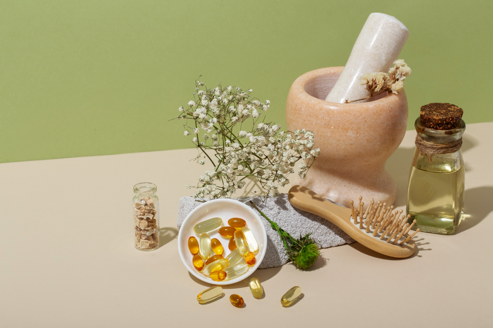

Welcome to Ayurveda
What Is Ayurvedic Medicine?
The ancient Indian medical system, also known as Ayurveda, is based on ancient writings that rely on a “natural” and holistic approach to physical and mental health. Ayurvedic medicine is one of the world’s oldest medical systems and remains one of India’s traditional health care systems. Ayurvedic treatment combines products (mainly derived from plants, but may also include animal, metal, and mineral), diet, exercise, and lifestyle.What the Science Says About the Effectiveness of Ayurvedic Medicine
Few well-designed clinical trials and systematic research reviews suggest that Ayurvedic approaches are effective.- Results from a 2013 clinical trial compared two Ayurvedic formulations of plant extracts against the natural product glucosamine sulfate and the drug celecoxib in 440 people with knee osteoarthritis. All four products provided similar reductions in pain and improvements in function
- A preliminary and small NCCIH-funded 2011 pilot study with 43 people found that conventional and Ayurvedic treatments for rheumatoid arthritis were similarly effective. The conventional drug tested was methotrexate and the Ayurvedic treatment included 40 herbal compounds
- Outcomes from a small short-term clinical trial with 89 men and women suggested that a formulation of five Ayurvedic herbs may help people with type 2 diabetes. However, other researchers said inadequate study designs haven’t allowed researchers to develop firm conclusions about Ayurveda for diabetes.
- Turmeric, an herb often used in Ayurvedic preparations, may help with ulcerative colitis, but the two studies reporting this were small—one, published in 2005, included 10 people while the other, published in 2006, had 89
What the Science Says About the Safety of Ayurvedic Medicine
- Some Ayurvedic preparations include metals, minerals, or gems. The U.S. Food and Drug Administration warns that the presence of metals in some Ayurvedic products makes them potentially harmful.
- A 2015 published survey of people who use Ayurvedic preparations showed that 40 percent had elevated blood levels of lead and some had elevated blood levels of mercury. About one in four of the supplements tested had high levels of lead and almost half of them had high levels of mercury.
- A 2015 case report published in the Center for Disease Control’s Morbidity and Mortality Weekly Report linked elevated blood lead levels in a 64-year-old woman with Ayurvedic preparations purchased on the Internet.